Off-road autonomous navigation demands reliable 3D perception for robust obstacle detection in challenging unstructured terrain. While LiDAR is accurate, it is costly and power-intensive. Monocular depth estimation using foundation models offers a lightweight alternative, but its integration into outdoor navigation stacks remains underexplored.
We present an open-source off-road navigation stack supporting both LiDAR and monocular 3D perception without task-specific training. For the monocular setup, we combine zero-shot depth prediction (Depth Anything V2) with metric depth rescaling using sparse SLAM measurements (VINS-Mono). Two key enhancements improve robustness: edge-masking to reduce obstacle hallucination and temporal smoothing to mitigate the impact of SLAM instability.
The resulting point cloud is used to generate a robot-centric 2.5D elevation map for costmap-based planning. Evaluated in photorealistic simulations (Isaac Sim) and real-world unstructured environments, the monocular configuration matches high-resolution LiDAR performance in most scenarios, demonstrating that foundation-model-based monocular depth estimation is a viable LiDAR alternative for robust off-road navigation. By open-sourcing the navigation stack and the simulation environment, we provide a complete pipeline for off-road navigation as well as a reproducible benchmark. Code available at https://github.com/LARIAD/Offroad-Nav.
The pipeline takes as input either a LiDAR point cloud or monocular camera images with a SLAM sparse point cloud, along with robot localization. It outputs velocity commands for the robot. The three core modules are: (1) 3D perception, (2) ground segmentation and elevation mapping via Cloth Simulation Filter (CSF), and (3) costmap-based path planning with an A* global planner and TEB local planner.
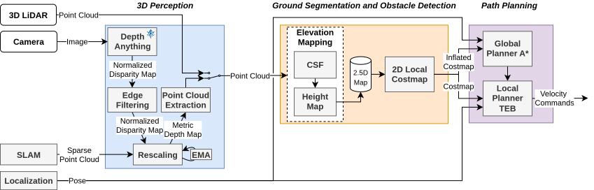
We created three photorealistic simulation environments in NVIDIA Isaac Sim, spanning three difficulty levels. All environments are open-sourced as a reproducible benchmark for off-road navigation.
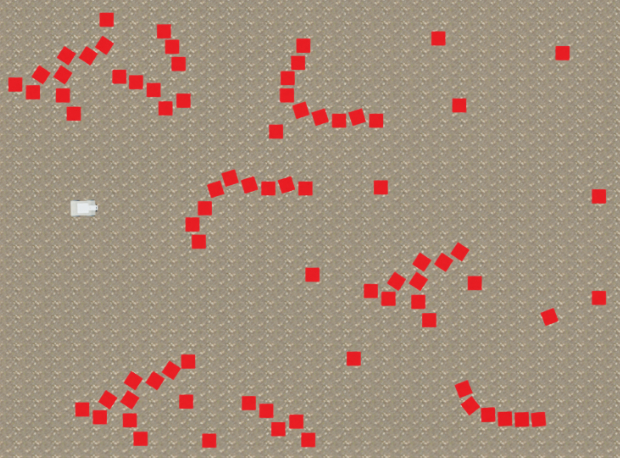
Easy — flat terrain with red cube obstacles
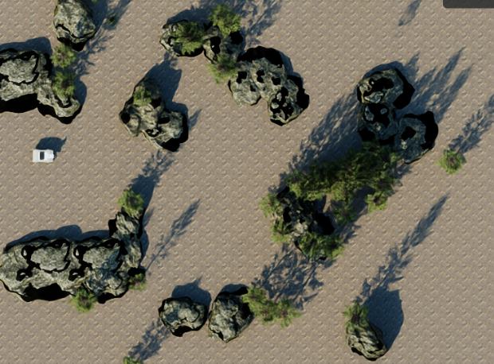
Medium — photorealistic trees and rocks
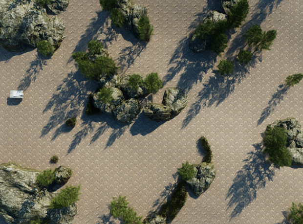
Hard — ground elevation, high grass, and photorealistic obstacles
Top-view trajectory maps for the three simulated environments. Each column shows one environment (easy, medium, hard). Top row: LiDAR (sim-tuned). Middle row: LiDAR (real-params). Bottom row: Mono-VINS (STCD only). Goal points at 10m (orange), 20m (blue), and 30m (green) are marked with stars. Dashed lines are remotely-operated reference trajectories; solid lines are autonomous runs.
LiDAR (sim-tuned)
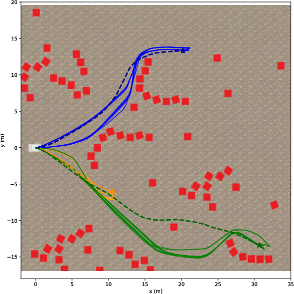
Easy
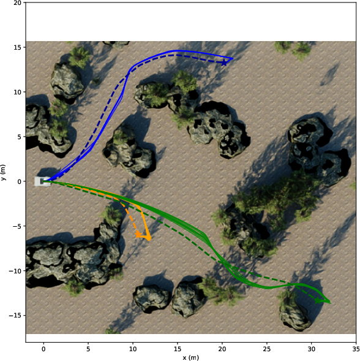
Medium
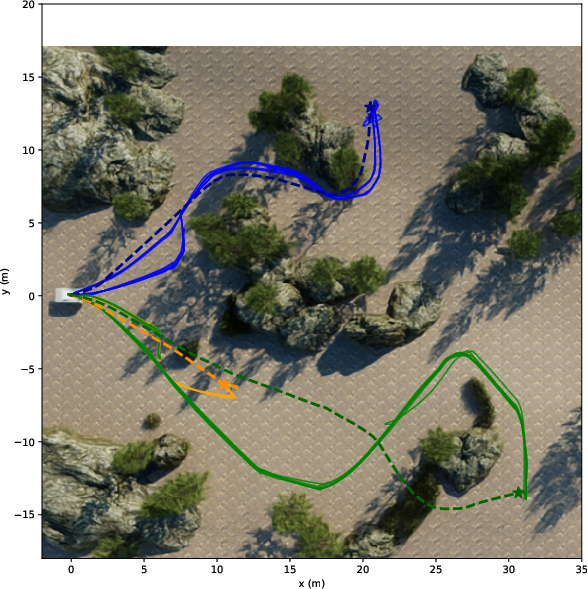
Hard
LiDAR (real-params)
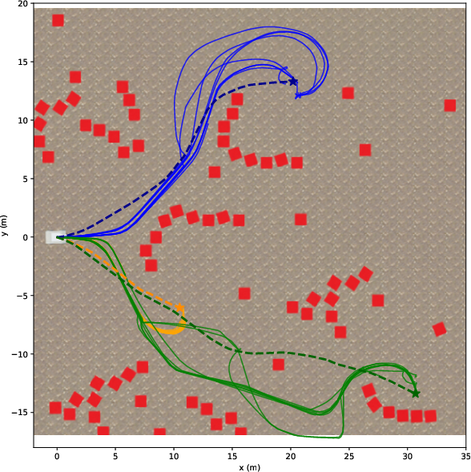
Easy
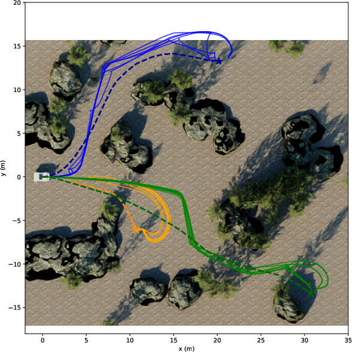
Medium
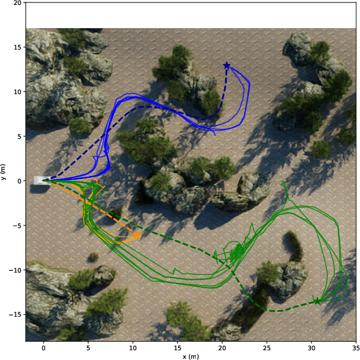
Hard
Mono-VINS (STCD only)
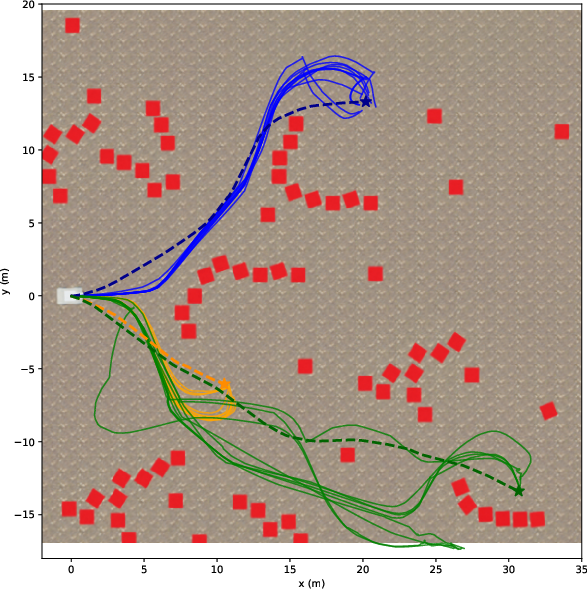
Easy
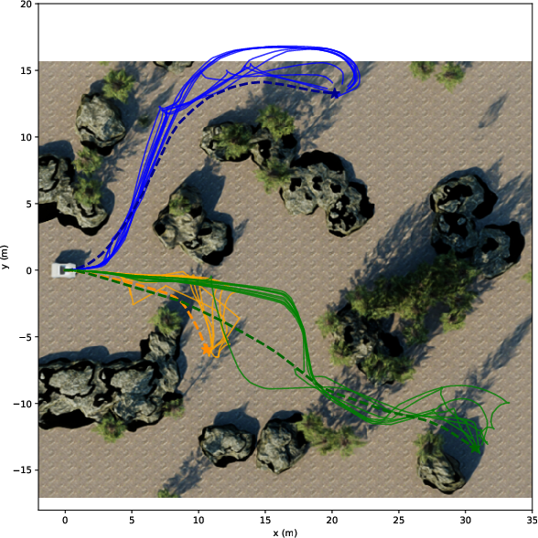
Medium
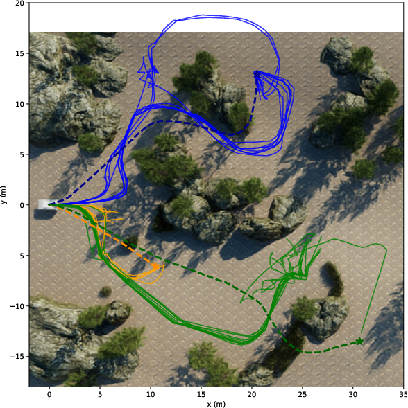
Hard
Top-view trajectory maps for real-world experiments with the Barakuda wheeled ground robot. Top row: LiDAR. Bottom row: Mono-VINS. Columns correspond to easy, medium, and hard scenarios. Obstacles are shown in white.
LiDAR (real-params)
Easy
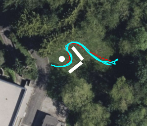
Medium
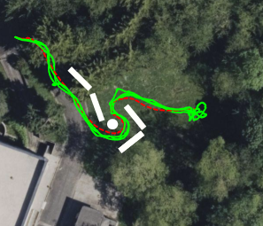
Hard
Mono-VINS
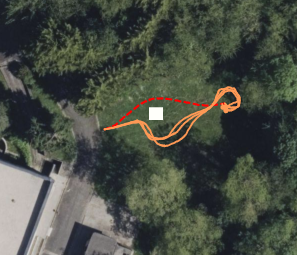
Easy
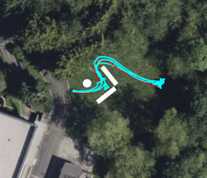
Medium
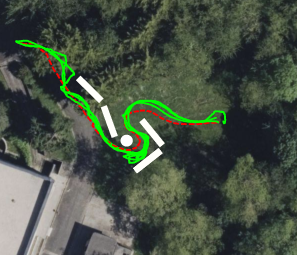
Hard
@article{stacknav2026,
title = {An Open-Source LiDAR and Monocular Off-Road Autonomous Navigation Stack},
author = {Marsal, R{\'e}mi and Picard, Quentin and Poir{\'e}, Adrien and
Kerbourc'h, S{\'e}bastien and Toralba, Thibault and
Chapoutot, Alexandre and Filliat, David},
journal = {arXiv preprint arXiv:2604.03096},
year = {2026}
}